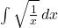

TrueSymPy
Thinking Machines
Why SciPy?
What is SymPy?
- Symbolic Python
Why SymPy
- “SymPy is free both as in speech and as in beer.”
- “Most computer algebra systems invent their own language. Not SymPy.”
- “An advantage of SymPy is that it is lightweight.”
Why not SymPy
- To my knowledge, there’s no real competitors with SymPy.
- The closest are probably SageMath and Mathematica.
- I use browser-based Mathematica via https://www.wolframalpha.com/ from time to time (when I don’t have a Python installation handy).
Cite
@article{10.7717/peerj-cs.103,
title = {SymPy: symbolic computing in Python},
author = {Meurer, Aaron and Smith, Christopher P. and Paprocki, Mateusz and \v{C}ert\'{i}k, Ond\v{r}ej and Kirpichev, Sergey B. and Rocklin, Matthew and Kumar, AMiT and Ivanov, Sergiu and Moore, Jason K. and Singh, Sartaj and Rathnayake, Thilina and Vig, Sean and Granger, Brian E. and Muller, Richard P. and Bonazzi, Francesco and Gupta, Harsh and Vats, Shivam and Johansson, Fredrik and Pedregosa, Fabian and Curry, Matthew J. and Terrel, Andy R. and Rou\v{c}ka, \v{S}t\v{e}p\'{a}n and Saboo, Ashutosh and Fernando, Isuru and Kulal, Sumith and Cimrman, Robert and Scopatz, Anthony},
year = 2017,
month = jan,
keywords = {Python, Computer algebra system, Symbolics},
abstract = {
SymPy is an open source computer algebra system written in pure Python. It is built with a focus on extensibility and ease of use, through both interactive and programmatic applications. These characteristics have led SymPy to become a popular symbolic library for the scientific Python ecosystem. This paper presents the architecture of SymPy, a description of its features, and a discussion of select submodules. The supplementary material provide additional examples and further outline details of the architecture and features of SymPy.
},
volume = 3,
pages = {e103},
journal = {PeerJ Computer Science},
issn = {2376-5992},
url = {https://doi.org/10.7717/peerj-cs.103},
doi = {10.7717/peerj-cs.103}
}pip again
- Just like NumPy, Matplotlib is a Python package which we install via
pip
python3 -m pip install sympy- That might take a moment, when it does we can check it worked!
Motivation
Example
- Computers don’t hold numbers that precisely.
Fractions
- Much worse with fractions I find.
Floats:
- The IEEE 754 Floating-Point Standard

- It is basically scientific notation that fits in a fixed amount of characters.
What is it?
- The IEEE 754 standard defines formats for representing floating-point numbers.
- It specifies how floating-point numbers are stored and operated on in computer hardware.
- Most modern CPUs adhere to this standard.
Why is it important?
- Ensures portability and consistency of numerical computations across different systems.
- Without a standard, the same calculation could yield different results on different machines.
- Essential for reliable scientific and engineering software.
Single Precision (Float32)
- Uses 32 bits to represent a number.
- 1 sign bit, 8 exponent bits, 23 significand (mantissa) bits.
- Offers approximately 7 decimal digits of precision.
Double Precision (Float64)
- Uses 64 bits to represent a number.
- 1 sign bit, 11 exponent bits, 52 significand bits.
- Offers approximately 15-17 decimal digits of precision. This is the default in Python and NumPy.
Special Values
- Infinity \(\infty\): Result of overflow or division by zero.
lil = np.finfo(np.float64).resolution # smallest recognizable value
big = np.finfo(np.float64).max # biggest recognizable value
big / lilC:\Users\cd-desk\AppData\Local\Temp\ipykernel_23864\563832135.py:3: RuntimeWarning:
overflow encountered in scalar divide
np.float64(inf)- Not a Number (NaN): Result of undefined operations (e.g., \(0/0\), \(\sqrt{-1}\)).
Pitfall 1: Limited Precision
- Not all real numbers can be represented exactly.
- Decimal numbers like 0.1 often have an infinitely repeating binary representation.
- This leads to small, unavoidable rounding errors.
Pitfall 2: Accumulation
- Small rounding errors can accumulate over many operations.
- This can lead to significant inaccuracies in long computations or iterative algorithms.
- Careful algorithm design and error analysis are crucial.
Pitfall 3: Comparison Issues
- Due to limited precision, direct equality comparisons (
==) between floating-point numbers are often unreliable.
Pitfall 4: Subtractive Cancellation
- Occurs when subtracting two nearly equal numbers.
- The most significant bits cancel out, leaving only the less significant bits.
- Can drastically reduce the effective precision.
Symbolic Computation
Credit
- The SymPy tutorial.
- SymPy solves the floating point problem.
Quoth SymPy
Symbolic computation deals with the computation of mathematical objects symbolically. This means that the mathematical objects are represented exactly, not approximately, and mathematical expressions with unevaluated variables are left in symbolic form.
Non-symbolic Computation
- A common problem in computing is to compute the likes of distance between points separated by vectors.
- Imagine two objects are separated by a horizontal displacement of
3units, and vertical displacement of4units, and we wish to determine the minimum distance. - A straightforward application of the Pythagorean Theorem.
Pitfalls
- These distances quickly become inaccurate.
- Then stuff like this happens:
Symbolic Computation
- In point of fact, the solution to \(\sqrt{2^2 + 4*2}\) is actually \(\sqrt{20}\) and there’s no other graceful way to represent it.
- So we’ll use symbols to store values.
Expressions
- We term this a “symbolic expression”.
- We can perform operations…
- We can add other symbols…
Niceties
- We can declare multiple symbols at once:
- SymPy will automatically simplify.
- Compare:
Operations
Extended Floats
- SymPy uses floats by default, but doesn’t have to.
- You can specify a number of decimals for any value.
- We also should that SymPy contains some useful constants!
Substitution
- Often we want to solve an equation algebraically and also know a numerical solution.
- The usefulness of SymPy is to do both, and maximally simply the result to minimize error.
- We can use
subs()to get solutions given values.
Value Substitution
- Substitute
3forx
Expression Substitution
- Perhaps
yis, itself, a distance expressed over a right triangle with sidesaandb
Strings
- Sometimes we want to take a Python expression and convert to a symbolic SymPy expression.
\(\displaystyle x^{2} + 3 x - \frac{1}{2}\)
- Then calculate with
.subs()
Functions
- Sibling of
vectorize - Takes a SymPy expression, makes a Python function.
- Calculate…
Aside: SciPy/NumPy
- Always use
lambdifyspecified with"scipy"(or"numpy") if you have SciPy or even just NumPy installed - It uses NumPy’s more powerful (than Python’s) mathematical operations.
Aside: Plots
Simplification
- If I use SymPy, I don’t have to remember this:
- Or figure out this:
Polynomials
- Often we don’t want a simplified polynomial.
- We perhaps instead wish to
factor()
Expand
- We may also start with factored form.
- This can deceptively by made smaller by expanding it.
Fractions
- We can also cancel out fractions.
- Using
sympy.factor()
Powers
- SymPy can also perform some simplifications related to exponention.
- Movie size in memory is frame size time frame rate times duration.
- Or just sub in
2
Calculus
Derivatives
- We can calculate derivatives.
Integrals
Evaluate Integrals
- Give a variable a domain…
Limits
- One famous problem is to compute the value of the following function as it approaches zero: \[ \lim_{x\to 0} \frac{\sin{x}}{x} \]
Evaluate limits
- We provide a variable and the value it approaches.
Viewing limits
- To create a printable limit object that can be evaluated.
- Capitalize
- Resolve via
.doit - Also works for
DerivativeandIntegral
Solutions
Solve Equations
Algebra
- We use the much nicer way to get variable names.
- We will aim to solve the following: \[ x^2 = y \]
Write in SymPy
- SymPy, like many algebra systems, expects equations to be expressed as equal to zero.
- We note the following equivalence. \[ x^2 = y \equiv x^2 - y = 0 \]
- So we write:
Solve
- To solve, we simply use
sympy.solve()- We specify the equation to solve, and
- The variable for which to solve.
- We could also do:
== and Eq()
- SymPy, for a variety of good reasons, struggles with
==in equations, so useEq()
- It works as expected.
Aside: Rationals
- The is true for fractions with
Rational()
- In general, if something would be “weird” with Sympy, there is a capitalized name that does what you would expect.
- Just check the documentation.
Printing
Pretty Print
- SymPy provides a number of ways to see equations.
- By default, these slides use “LaTeX”, which I regard as the standard for mathematical typesetting.
- However, it doesn’t often show up that way in the terminal!
init_printing
- Here’s what my terminal looks like:
>>> import sympy
>>> from sympy.abc import x, y, z
>>> sympy.Eq(x*x,y)
Eq(x**2, y)
>>> sympy.init_printing()
>>> sympy.Eq(x*x,y)
2
x = yOptions
- The following visualization methods are usably by SymPy:
- str
- srepr
- ASCII pretty printer
- Unicode pretty printer
- LaTeX
- MathML
- Dot
Example
- We’ll use an integral example:
str
- Just gives the string, basically as we typed it in.
srepr
srepris string representation and is more exact and verbose.- I don’t use it often, but it can be helpful to examine equations when I get unexpected answers.
ASCII
- ASCII is the oldest major standard for character displays, with 127 characters including non-printing or whitespace characters like tab and space.
- We can make “ASCII art” of equations via
pprint.- We must set
use_unicodetoFalse
- We must set
Unicode
- We get some slightly smoother lines with the more complete Unicode character set.
- Unicode is the modern more complete character set including non-English characters and the likes of emojis. 🤔💭🔢✖️🧮
LaTeX
- My favorite (by far!)
- I use LaTeX (.tex) a lot in these and other slides.
- I don’t see the double backslash in my terminal, that is just an artiffact of the slides.
>>> sympy.latex(sympy.Integral(sympy.sqrt(1/x), x))
\int \sqrt{\frac{1}{x}}\, dxyyUsing LaTeX
- I can directly display that LaTeX in these slides…
- I type:
file.tex
$$
\int \sqrt{\frac{1}{x}}\, dxyy
$$$$denotes LaTeX “math mode”, versus just basic text editing.
- We see:
\[ \int \sqrt{\frac{1}{x}}\, dxyy \]
QuickLaTeX
- You can see examples online:
- Go to https://www.quicklatex.com/
- Use this code:
\int \sqrt{\frac{1}{x}}\, dxyy- I see this:

Overleaf
- The preferred way to use LaTeX for most students is Overleaf:
- I use it at the command line via
texlive
tex command
- I write the LaTeX output to file.
integral.py
- And then:
$ python3 integral.py > file.tex- Or all at once using
;to separate lines
$ python3 -c "import sympy; x = sympy.symbols('x'); print(sympy.latex(sympy.Integral(sympy.sqrt(1/x), x)))" > file.texnvim edits
- I open the file with
nvimand add lines specifying I want a document and that I want “math mode” - Before:
\int \sqrt{\frac{1}{x}}\, dx- After:
\begin{document}
$$
\int \sqrt{\frac{1}{x}}\, dx
$$
\end{document}Render
- Simply render to a
.pdfvia
$ pdflatex file.tex- I have uploaded the file as well:
ODEs
Ordinary Differential Equations
Credit
Equation
- Consider the decay of tritium as an example.
\[ {}^3\text{H} \xrightarrow{\lambda} {}^3\text{He} + \text{e}^- + \bar{\nu}_\text{e} \]
- This is, by the way, LaTeX:
tritium.tex
{}^3\text{H} \xrightarrow{\lambda} {}^3\text{He} + \text{e}^- + \bar{\nu}_\text{e}Tritium
Tritium is a radioactive isotope of hydrogen. It has the same number of protons and electrons as hydrogen but has 2 neutrons, whereas regular hydrogen does not have any. This makes tritium unstable and radioactive. Tritium is produced naturally from interactions of cosmic rays with gases in the upper atmosphere, and is also a by-product of nuclear reactors.
Tritium
Like all radioactive isotopes, tritium decays. As it decays, it emits beta radiation.
The physical half-life of tritium is 12.33 years, meaning that it takes just over 12 years for tritium to decay to half of its original amount. As tritium decays, it changes to helium.
Derivatives
- We denote the “number density” (number of atoms in a sample) of \(^3\text{H}\) as a function of time \(y(t)\)
- The rate of change (derivative)
\[ \frac{d}{d t} y{\left(t \right)} = - \lambda y{\left(t \right)} \]
- This is a differential equation because an equation is a function of its own derivative.
Exercise
- Specify this equation in SymPy
- Solve using
sympy.dsolve()
Tools
- This is how I got lambda:
- This is \(y(t)\)
- Take derivatives as follows:
Solution
- Write:
Code
\(\displaystyle \frac{d}{d t} y{\left(t \right)} = - \lambda y{\left(t \right)}\)
- Solve: